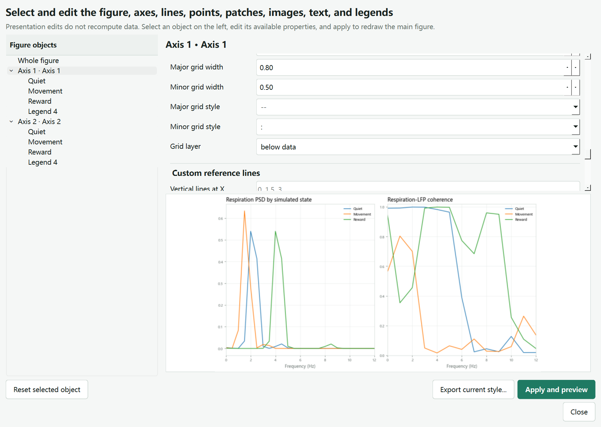

Publication control without recomputation
Figure Studio：不是“保存一张冰冷的图”
Figure Studio: object-level publication control
每个分析页面先保留可缩放、平移和点选数值的主图，再允许逐个编辑整图、 坐标轴、曲线、散点、柱/填充区域、热图、文字与图例。呈现修改不会改动原始数据或重新执行统计。
Inspect, zoom, pan, and query values first, then edit the figure, axes, lines, scatters, patches, images, text, and legends without recomputing data.


主图上的操作分别做什么
What each main-figure action does
| 操作 | 作用 | 适合场景 | 是否改变分析结果 |
|---|---|---|---|
| 单击点/线/柱 | 显示当前元素标签与 x/y 数值 | 核对某个通道 RMS、Unit 指标、时间点、分类结果 | 否 |
| 放大镜 | 框选局部范围并放大 | 看单个 spike 波形、窄频段、局部时间窗 | 否 |
| 平移 | 保持尺度移动观察窗口 | 逐段检查长波形或高密度通道 | 否 |
| Home/前进/后退 | 恢复初始视图或浏览缩放历史 | 局部检查后回到全局 | 否 |
| 子图选择 | 指定放大、编辑和单独保存的 panel | 多 panel 图中只处理一张 | 否 |
| 单独放大 | 暂时隐藏其他 panel，让当前子图占满画布 | 小图细节检查 | 否 |
| 编辑子图/图形设置 | 打开 Figure Studio，并自动定位坐标轴 | 论文版式、颜色和元素控制 | 只改呈现 |
| 保存子图 | 只导出当前 panel，不保存其余 panel | 论文多面板排版 | 否 |
| 运行当前节点 | 根据本页参数重新计算数据并重画 | 参数或方法改变后 | 是，会产生新的派生结果 |
左侧对象树：先选“正在改什么”
Object tree: select exactly what you are editing
Figure Studio 根据当前 Matplotlib 图动态建立对象树。一个多面板图会出现整图节点、 多个坐标轴节点以及每个坐标轴下的可编辑元素。元素名称优先使用图例标签； 没有标签时显示 Line、Scatter、Patch、Image 或 Text 编号。
- 改整张图的尺寸、DPI 或背景：选择“整张图 / Figure”。
- 改标题、范围、网格、刻度、边框和图例：选择对应坐标轴。
- 只改一条 PSTH 线：展开坐标轴，选择该 Line。
- 只改一类散点的颜色与大小：选择对应 Scatter。
- 修改热图颜色范围：选择 Image / heatmap，而不是坐标轴背景。
- 修改图内注释：选择 Text；轴标题和轴名称仍在坐标轴节点修改。
改变整条 artist 的颜色会统一该元素；如果散点原本逐点编码颜色，统一颜色会覆盖这层编码。应用前先确认颜色是否承载数据含义。
整图 / Figure
| 控件 | 单位/范围 | 作用 | 建议 |
|---|---|---|---|
| 宽度、高度 | 英寸 | 决定画布物理尺寸与布局比例 | 单栏常用 85 mm（3.35 in），双栏约 178 mm（7.01 in）；以目标期刊为准 |
| DPI | 50–1200 | 控制位图像素密度；SVG/PDF 的矢量线条不依赖 DPI | PNG/TIFF 常用 300–600 dpi；不要用放大低 DPI 图片代替重新导出 |
| 背景颜色 | 颜色选择器 | 整张图 figure face color | 论文通常白色；深色背景要同时检查全部文字和轴线对比度 |
| 尺寸预设 | 单栏/双栏/方形/16:9 | 快速设置常见版式 | 预设只改尺寸，不自动保证字体符合期刊要求 |
| 透明背景 | 开/关 | 导出时保留 alpha | 用于排版叠放；最终 PDF 前检查透明混合与印刷效果 |
坐标轴 / Axis
标题、标签、尺度与范围
| 控件 | 改变对象 | 科学含义与注意事项 | 错误信号 |
|---|---|---|---|
| 标题 | panel title | 应描述条件、对象或方法，不把推测写成结论 | 标题与图例/坐标定义冲突 |
| X/Y 轴名称 | axis label | 必须同时写变量与单位，如 Time from stimulus (s) | 只有“Time”“Value”或单位缺失 |
| linear/log/symlog/logit | 坐标变换 | 改变视觉距离但不改变原数据；零/负数不能直接上 log | 点消失、范围报错或对差异产生夸大视觉 |
| 最小/最大值 | 显示范围 | 用于聚焦，不应裁掉不利结果而不说明 | 误差线、离群值或基线被截断 |
| 标题/标签字号 | 文字物理大小 | 最终排版尺寸下仍需可读 | 应用中很大，缩到论文尺寸后不可读 |
| 标题对齐、字重、颜色 | 图标题文字对象 | 用于建立 panel 层级，不改变数据 | 标题颜色被误解为条件编码 |
| X/Y 标题独立字号与间距 | axis label 与 labelpad | 解决单位、长标签和版面挤压 | 标题与刻度数字重叠 |
| 绘图区背景 | axes face color | 不等于整图背景 | 热图/散点与背景对比不足 |
绘图区位置与 X/Y 轴实际长度
| 控件 | 单位 | 实际改变 | 检查 |
|---|---|---|---|
| X 轴实际长度 | 英寸 | 绘图区在整张 figure 中的物理宽度，不缩放字体和点 | 不能超过画布剩余宽度 |
| Y 轴实际长度 | 英寸 | 绘图区物理高度 | 多 panel 比较时保持一致 |
| 左/下位置 | 画布百分比 | 移动绘图区，为长标题、图例或刻度留空间 | 位置加长度不得越出 100% |
| 数据纵横比 | auto/equal | equal 让 X/Y 的一个数据单位显示为同样长度 | 空间轨迹适合 equal，普通 PSTH 通常用 auto |
四条轴线、主次刻度与数字
| 控件 | 作用 | 建议 | 注意 |
|---|---|---|---|
| 下 X、左 Y、上、右 | 每条 spine 独立显示、颜色、线宽与外移距离 | 统计图常保留下/左，矩阵图可显示完整框 | 不要用白色假装隐藏，直接关闭可见性 |
| X/Y 主刻度间隔 | 明确数值标签间距；留空自动 | 跨 panel 比较时固定相同间隔 | 间隔过密造成标签重叠 |
| X/Y 次刻度分区 | 在相邻主刻度间建立细分 | 只在读数需要时显示 | 次刻度不应比主刻度更长或更粗 |
| 主/次刻度长度与线宽 | 分别控制 tick mark | 与轴线线宽建立清晰层级 | 过粗会与短误差线混淆 |
| in/out/inout | 刻度指向绘图区内、外或跨轴 | 同一图组保持一致 | 向内刻度可能遮挡靠近边界的数据 |
| 数字格式 | 自动、整数、小数位或科学计数 | 按测量精度选择，不制造虚假有效位数 | 强制小数位可能暗示不存在的精度 |
X/Y 独立网格与自定义参考线
| 控件 | 作用 | 建议 | 注意 |
|---|---|---|---|
| X/Y 主网格 | 分别沿 X 或 Y 主刻度绘线 | 只显示帮助读数的方向 | 不必默认四向全开 |
| X/Y 次网格 | 按 minor locator 绘制更细网格 | 线宽、alpha 均低于主网格 | 密集网格会淹没 raster/散点 |
| 网格图层 | 数据下方或上方 | 多数科研图放在数据下方 | 热图上方网格可能有意用于定位像素 |
| 垂直/水平参考线 | 在指定 X/Y 值增加可追踪 Line 对象 | 用于事件 0 点、阈值或机会水平，并在图注解释 | 参考线不是统计显著性证据 |
图例
坐标轴节点可以控制图例显示、标题、位置、列数、字号、背景、边框颜色、边框线宽与透明度。 只有设置了有效 label 的元素才进入图例。 改 Line/Scatter 的“图例名称”后，再到坐标轴应用图例设置以更新显示。
相关交互依据可查阅 GraphPad 官方的 axis length and graph size、 major/minor ticks、 grid lines 和 frame and axes。
曲线、散点、柱/区域、热图与文字
Lines, points, patches, images, and text
Line / 曲线
可编辑可见性、透明度、z-order、图例名称、线颜色、线宽、线型、marker 形状、大小、填充色与边框色。
建议：PSTH 均值线与置信带应使用同一色系但不同 alpha；多条件颜色要在所有 panel 中保持一致。线宽用于视觉层级，不应暗示未经定义的显著性。
Scatter / 散点
可编辑点填充色、边框色、点面积、边框粗细、透明度与 z-order。点面积参数是面积，不是直径。
建议：大量点优先降低 alpha 或使用小点；不要只靠红绿区分组；当颜色编码连续变量时应保留 colorbar。
Patch, bar, filled region / 柱与填充区域
可编辑填充色、边框色、边框粗细、hatch、alpha 和 z-order。柱状图中的每根柱可能是独立 Patch，因此可以逐柱编辑。
建议：误差带 alpha 常低于主线；hatch 适合黑白打印，但密度过高会遮挡误差和散点。
Image / heatmap / 热图
可编辑 colormap、vmin/vmax、插值、透明度与 z-order。vmin/vmax 决定颜色映射，不改变底层矩阵。
建议：有方向的正负效应用以 0 为中心的发散色图；放电率等非负量使用顺序色图；分类标签不要用连续色图。不同条件热图要比较时应统一颜色范围。
Text / 文字
可编辑内容、颜色、字号、字重、字形、旋转、水平/垂直对齐、透明度与 z-order。
注意：自动生成的 p 值或样本量文字若手工改写，将只改变呈现。正式导出前应回到统计表核对，不要手工制造新的数值。
导出、复现与“可编辑”的边界
Export, reproducibility, and editability boundaries
| 格式 | 优势 | 限制 | 推荐用途 |
|---|---|---|---|
| SVG | 文字、线和形状保持矢量，可在 Illustrator/Inkscape 编辑 | 复杂散点或热图文件可能很大 | 论文 panel 与进一步排版 |
| 矢量排版稳定，适合共享和投稿 | 后续对象级编辑不如 SVG 直接 | 归档、预览、投稿 | |
| PNG | 兼容性好，浏览器和幻灯片易用 | 位图，放大会失真 | 演示、网页、快速预览 |
| TIFF | 出版工作流常见，可高 DPI | 文件大，仍为位图 | 期刊明确要求时 |
- 先完成计算并保存项目，使图可以从参数和派生数据重新生成。
- 在 Figure Studio 修改呈现，应用后逐项检查图例、单位、颜色范围和裁切。
- 保存 SVG/PDF 作为主要论文资产，PNG/TIFF 按目标尺寸和 DPI 导出。
- 同时导出绘图数据、统计表和 Methods；不要只保留最终图片。
- 手工外部排版后，在项目记录中注明外部修改内容和软件版本。